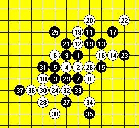
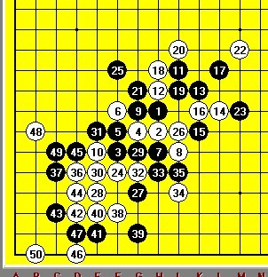

明教护法极地剑客智运会自评4
#1 明教护法极地剑客智运会自评4 作者：忧郁的双眼 发表时间：2009-11-23 21:39:58
09智力会自战棋评之第五局.
自我感觉是三次全国类型比赛最有质量2个对局之一,完全沉下心来步步计算用心下棋的对局.对手殷立成老师.感觉他写的书很不错的..

当殷老师走完17手~实战从棋盘上看黑棋局势已经很夸张了~单防我肯定防不住了~我选了个比较符合我风格的18~
对手走完23后~和我想的一样~可以借到右上角杀之,但是跳过去的话~我白棋存在反三.~所以下了24挂角~带单防抓禁~25在这里解抓禁防的棋~我当时想的是殷老师可能25上活三~和下活三(局后我们两都认为25下活再防强悍些)~
殷老师下完27后`我就在算抓44~算了10多分钟~确定确实抓了没得反了~就落子了~~

下到35~,殷老师35改防34下面~36冲四~38活三后~殷老师算了几分钟~确实无解~说了句抓了~投子了~
局后我请殷老师点评了一下我的棋风~受益匪浅~说了三句话~
1.下棋不干净.(个人理解:猥琐流最干净~先全盘防守,再杀之~不符合我风格~没意思~不喜欢下这样的棋~俺的棋和XX差不多~能不守就不守~能攻就杀之~不喜欢和棋~)
2,计算型棋手应该加强计算深度(额.......)
3.对攻击时机的把握(个人理解~俺走棋太急了~)
［ 失落刀 于 2009-11-23 22:18:10 时花20金币送鲜花一朵］